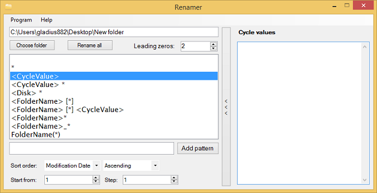

Wartości cykliczne są specjalnym mechanizmem, który umożliwia wstawienie w kolejnych nazwach pliku tekstu z listy zdefiniowanej przez użytkownika. Pozwala to na przypisaniu każdemu plikowi innej nazwy. Aby skorzystać z wartości cyklicznych należy rozwinąć dodatkowe menu w prawej części programu. Można tego dokonać za pomocą przycisku oznaczonego jako 12. Po jego kliknięciu zostanie wysunięte specjalne menu jak na obrazku poniżej.

Na wysuniętej liście można wpisywać dowolny ciąg znaków dozwolony w nazwach pliku. Kolejne wartości są oddzielane za pomocą nowej linii. Po wypełnieniu listy jest ona gotowa do użycia i o ile pozostałe pola potrzebne do działania programu zostały wypełnione można przystąpić do zmiany nazw plików.
W przypadku kiedy wartości na liście jest mniej niż plików, których dotyczy zmiana nazwy, program zacznie przypisywać wartości cykliczne od nowa zaczynając od góry listy.